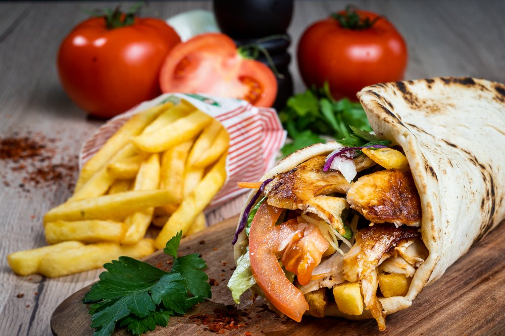

Regal Kebab

Description
Dristor kebab is the best recipe recognized so far by Ionut Lenghel himself in the work 'Ode to Kebab', a canonical work of national gastronomy.
My utmost respect to Ionut Lenghel.
Ingredients
- the best beef
- the best tomatoe
- the best sauce
Steps
- you need to be physically and mentally prepared, and you need the Lord to be on your side.
- pick up the phone and call Dristor Kebab
Return to main page